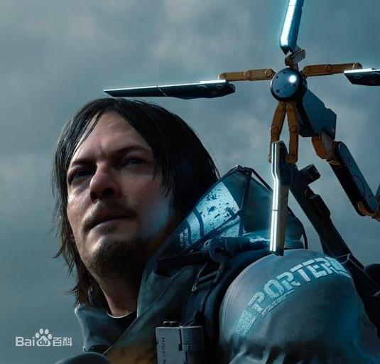
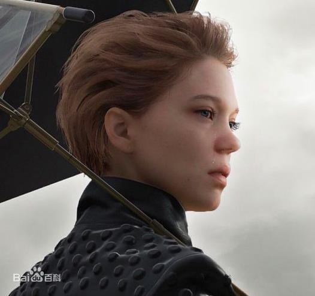
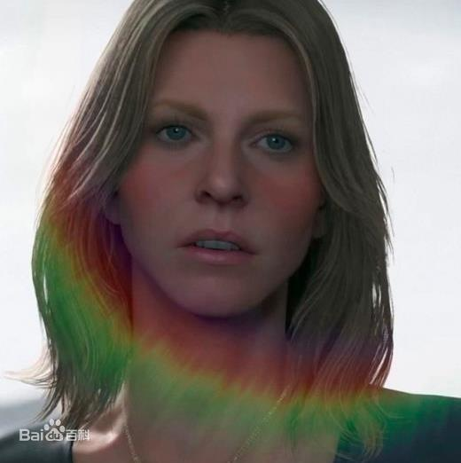

|  |
玩家角色山姆·波特·布里吉斯，人称“山姆”，
游戏主角，游戏中玩家唯一可以操作的角色。
患有肢体接触恐惧症，无法与他人肌肤接触，
在布里吉斯快递公司当一名送货员。
总统的女儿，山姆的姐姐。她的真名是亚美利哥，
取自北美洲的发现者亚美利哥·韦斯普奇（Amerigo Vespucci）。
|
 |
|  | ||
芙拉吉尔速运公司的总裁，以隐身虫为食。
具有很高的杜姆斯等级（超自然能力），
可以在现实世界与冥滩之间穿梭。在序幕中与山姆初次见面。
此后玩家还会多次与她互动，因为你需要通过她来进行快速传送。
|
||